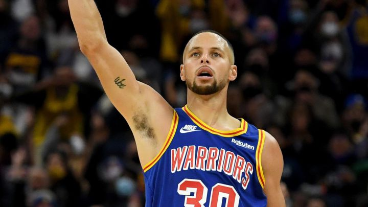

Stephen Curry se lleva el duelo de hermanos tras una brutal remontada de los Warriors
El base (25 puntos) supera a Seth (24) y los lideres de la NBA ganan por 20 después de ir perdiendo por 19
Stephen Curry anotó 25 puntos con 6/11 en triples para ganar el duelo familiar a su hermano Seth, que se quedó en 24 y no anotó ninguno de sus cinco lanzamientos desde el arco. Y los Warriors aplastaron a los Sixers después de una brutal remontada. Perdían por 19 (34-53) en el segundo cuarto y acabaron ganando por 20 con un parcial de 82-43 en los últimos 29 minutos de partido, incluido un 64-35 en la segunda mitad.
A Curry se le unieron Juan Toscano-Anderson, que anotó todos sus 13 puntos en la segunda parte, y Gary Payton II, que contagiaron su energía a los Warriors. Culminaron su remontada con triples consecutivos de Curry y de su cuñado Damion Lee a falta de 39 segundos para el final del tercer cuarto (86-84). Después, los Sixers desaparecieron en el último recibiendo un 30-12.

"Podemos anotar, pero activamos el interruptor defensivo y les hicimos lanzar tiros difíciles en la segunda mitad y eso lo usamos también para mejora el ataque. Fue bastante impresionante el cambio de energía que tuvimos después del primer cuarto", analizó el Curry vencedor.
Los Sixers, sin Joel Embiid y Tobias Harris, perdieron por séptima vez en nueve partidos mientras que los Warriors se mantienen en todo lo alto de la clasificación con un balance de 15-2 y es el único de la NBA que ha alcanzado los 100 puntos en todos sus encuentros además de mantener los mejores registros defensivos de la Liga.
"Los Warriors te enamoran con sus triples y te matan con los tiros de dos. Los tiros que hace Steph te hipnotizan, pero te están matando con los dos y creo que los equipos que entiendan eso comprenderán mejor cómo jugar con ellos", resumió Doc Rivers, entrenador de los Sixers.